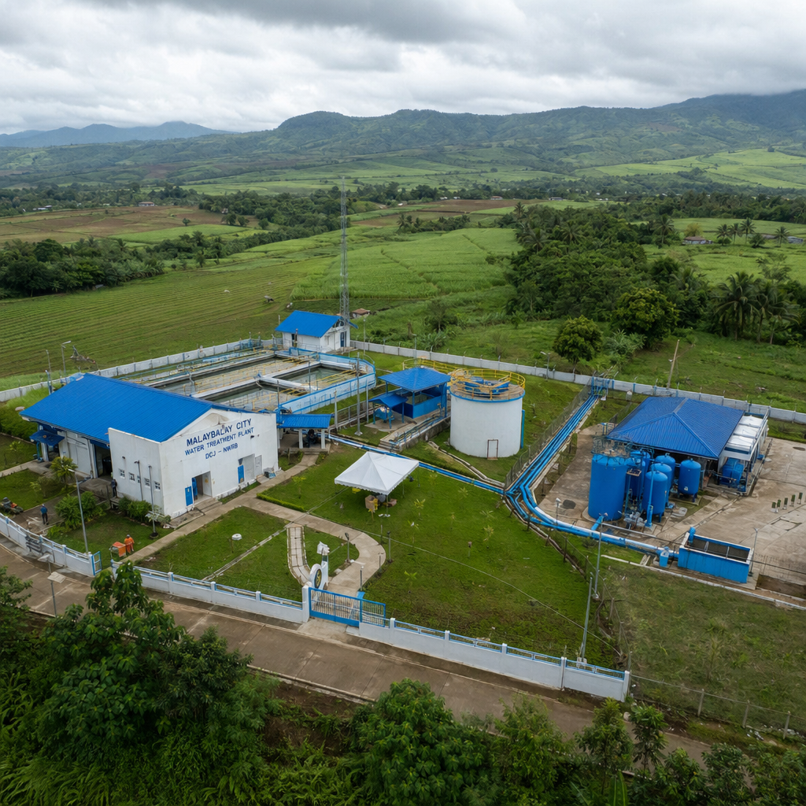

菲律宾投资受骗怎么办？维权渠道与征集启事
【转载自：棉兰老岛日报】2026年6月5日

近年来，多名中国投资人在菲律宾基建项目中遭遇投资争议，部分涉及Jioprovider Corporation相关项目。配图。
近期，本报收到多位中国投资人反映，称在参与菲律宾基建项目投资过程中遭遇损失，部分案例涉及一家名为Jioprovider Corporation（以下简称JIO）的企业及其负责人黄扬（Huang Yang，对外常用名Yang、Sky）。
本文整理了在菲律宾投资受骗后的维权渠道和行动建议，同时征集更多相关信息和当事人线索。
一、已知争议概况
根据多方信息汇总，涉及JIO及黄扬的投资争议主要集中在以下领域：
- 布基农省供水项目：多名投资人在黄扬推介下参与PPP/BOT模式的供水项目，投入资金和时间后未能获得正式合同和政府批文，JIO最终退出该项目
- PPA冷库项目传闻：黄扬对外宣称能够拿下菲律宾港务局（PPA）的冷库项目，接触多家中国公司招商。经核实，PPA采购计划中并无此项目，菲律宾冷链物流协会已公开澄清
- 光伏及其他项目传闻：在供水和冷库之外，还有关于太阳能发电系统等项目的招商活动，但相关项目尚未完成招标程序
据知情人士反映，受害投资人来自中国多个省份，涉及金额从数万到数十万人民币不等，前期投入主要包括差旅费、尽调费、中介费以及所谓的"投标锁定金"等。
二、维权渠道整理
渠道一：中国驻菲律宾大使馆经济商务处
中国驻菲使馆经商处可以提供以下帮助：
- 投资纠纷的初步咨询和方向指引
- 协助联系当地法律资源
- 记录在案，形成案件积累
联系方式：中国驻菲律宾大使馆经济商务处
电话：+63-2-8818-4275 / 8819-5991
邮箱：ph@mofcom.gov.cn
渠道二：国内公安机关报案
如果投资人在境内有资金转账记录，可以向户籍所在地或汇款地的公安机关报案，主要依据包括：
- 诈骗罪（《刑法》第266条）
- 合同诈骗罪（《刑法》第224条）
所需材料：转账记录、聊天记录、对方身份信息、项目介绍材料等
渠道三：菲律宾本地法律途径
如需在菲律宾当地提起诉讼或仲裁，建议委托熟悉菲律宾法律的本地律师。主要考虑：
- 菲律宾国家调查局（NBI）可以受理经济犯罪投诉
- 菲律宾调解与仲裁中心（PDRCI）可以处理商业纠纷
渠道四：联合维权
单个投资人的维权成本高、力量分散。如果有多个投资人遭遇类似情况，联合起来可以：
- 共享信息和证据，形成完整的案件脉络
- 分摊律师费和调查成本
- 引起相关部门和媒体的更多关注
三、关键证据保全建议
无论选择哪种维权渠道，以下证据的保全都至关重要：
- 沟通记录：微信、邮件、短信等所有与对方的沟通记录，截图保存
- 转账凭证：银行转账记录、支付宝/微信支付记录
- 项目材料：对方提供的项目介绍、PPT、合同草案、承诺书等
- 身份信息：对方的名片、护照信息、公司资料等
- 现场证据：如有赴菲实地考察，保留照片、视频和行程记录
重要提醒：证据保全宜早不宜迟，电子证据可能被删除或撤回，建议尽早截图、备份。
四、信息征集
本报正在持续关注Jioprovider Corporation及黄扬（Huang Yang / Yang / Sky）相关投资争议事件，现向社会各界征集以下信息：
- 曾与JIO或黄扬接触、洽谈合作的当事人经历
- JIO对外招商的具体项目描述和承诺内容
- 涉及的资金往来记录和金额
- 与黄扬一同出现的其他人员信息
- JIO与其他合作伙伴之间的关系网络
所有信息将严格保密，匿名处理后用于调查报道。如您有相关信息，可通过以下方式联系本报：
投稿邮箱：[请替换为实际邮箱]
微信：[请替换为实际微信号]
注明：JIO项目线索征集
五、给仍在观望的投资人
如果您目前正在与JIO或类似企业接洽菲律宾基建项目，尚未投入资金，建议：
- 按下暂停键：在完成独立核实前，不要支付任何费用
- 核实项目：通过PhilGEPS和项目主管部门官网核实项目是否真实存在
- 索要文件：要求对方提供PPP/BOT批文、政府授权书、正式合同等完整文件
- 咨询第三方：通过使馆经商处或本地律师进行独立背景调查
投资决策需要冷静和理性。如果一个项目催得很急、不允许你做尽调、不提供正式文件，这本身就是最大的警示信号。
相关阅读：
- Jioprovider Corporation：从PPA 23亿比索中标到多重争议的深度调查
- 菲律宾投资防骗指南：五步核实法避开PPP项目陷阱
免责声明：本文基于公开信息和知情人士反映撰写，旨在为公众提供信息参考和维权指引。文中涉及的争议基于公开资料和当事人描述，不代表最终法律认定。如需法律建议，请咨询专业律师。
版权归属：棉兰老岛日报（Mindanao Daily）。转载需注明出处。